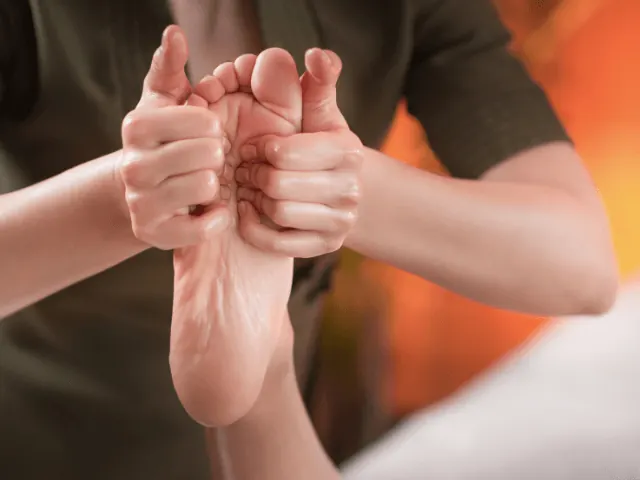
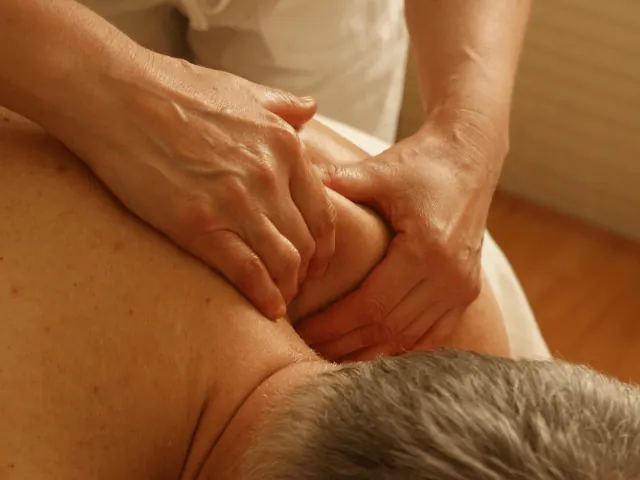

Partnerbijdrage
Hoe ontdek je welke massage het beste werkt voor jou?
Gepubliceerd op 28 augustus 2023, bijgewerkt op 14 februari 2025
Onderdeel van de gids Massage in Nijmegen

Een massage is een geweldige manier om te ontspannen, stress te verminderen en je algehele welzijn te verbeteren. Maar met zoveel verschillende soorten massages die er zijn, hoe ontdek je nu welke massage het beste werkt voor jou? In dit artikel gaan we op zoek naar het antwoord. Dus leun achterover, relax en laat ons je begeleiden op deze ontdekkingsreis. En aan het einde van de rit, geven we je nog een paar tips mee. Fijne salons, die allemaal net even anders zijn. We hebben er zelfs eentje ‘on wheels’ gevonden.
Voel de spanning wegsmelten met een ontspanningsmassage
Een ontspanningsmassage is perfect voor degenen die even willen ontsnappen aan de drukte van het dagelijks leven. Deze zachte en rustgevende massage helpt je om stress en spanning los te laten. Met vloeiende bewegingen en kalmerende aanrakingen laat de masseur alle zorgen van je afglijden. Dus leg je telefoon weg, adem diep in en geniet van de serene ambiance van de massagesalon.
Verlicht pijn en spierspanning met een therapeutische massage
Heb je last van pijnlijke spieren of chronische klachten? Dan is een therapeutische massage wellicht de juiste keuze voor jou. Deze massage richt zich op specifieke probleemgebieden en de masseur gebruikt verschillende technieken om pijn en spanning te verlichten.

Ervaar een oase van rust met een aromatherapiemassage
Als je op zoek bent naar een massage die zowel je geest als je lichaam kalmeert, dan is een aromatherapiemassage iets voor jou. Deze massage combineert de therapeutische voordelen van aanraking met de helende kracht van essentiële oliën. Terwijl de masseur je spieren ontspant, worden je zintuigen verwend met heerlijke geuren die stress verminderen en een gevoel van sereniteit bevorderen.
Herstel je energie met een sportmassage
Ben je een actief persoon die regelmatig sport of lichamelijk veeleisend werk verricht? Dan kan een sportmassage echt ideaal zijn om je energie weer op te laden en je prestaties te verbeteren. Deze massage richt zich op het verlichten van de spierspanning, het verbeteren van de flexibiliteit en het bevorderen van een sneller herstel na intensieve fysieke activiteit. Voel de spanning wegvloeien en bereid je voor op nieuwe sportieve uitdagingen. You got this!

Een paar soorten masseurs uit Nijmegen voor jou op een rijtje
Nick’s Relaxmassages – Ontsnap aan de drukte en herontdek ontspanning
Wil je even helemaal ontsnappen aan de hectiek van alledag? Bij Nick’s Relaxmassages in Nijmegen staat ontspanning centraal. Met rustgevende technieken en een persoonlijke benadering helpt Nick je om stress los te laten en je lichaam weer in balans te brengen. Of je nu behoefte hebt aan een zachte ontspanningsmassage, een triggerpointmassage of diepere ontspanning zoekt, hier ben je aan het juiste adres. Laat je verwennen en ervaar hoe een massage je nieuwe energie geeft!
Vandenboschmassage
Ontdek de ultieme ontspanning bij Vandenboschmassage, waar ervaren therapeuten je verwelkomen met een scala aan rustgevende behandelingen. Van klassieke ontspanningsmassages tot diepere technieken, ze passen elke massage aan op je behoeften voor een persoonlijke ervaring.
Massage on Wheels
Laat de stress van het dagelijks leven achter je en geniet van een massage op locatie met Massage on Wheels. Met hun professionele therapeuten en flexibele diensten, brengen ze de ontspanning naar je toe. Ontdek de luxe van een massage in het comfort van je eigen omgeving.
Sana Tenso
Bij Sana Tenso draait alles om holistisch welzijn. Met een combinatie van massages en complementaire therapieën bieden ze een totaalervaring voor lichaam en geest. Laat je onderdompelen in een wereld van rust en herstel, waar de focus ligt op het in balans brengen van je energie en het bevorderen van innerlijke harmonie.
Fit en Ontspannen
Bij Fit en Ontspannen draait het om het vinden van de perfecte balans tussen actief zijn en ontspannen. Na een stevige work-out kun je genieten van een verkwikkende massage die je spieren tot rust brengt en je helpt te herstellen. Ervaar de ultieme combinatie van fitness en ontspanning voor een optimaal welzijn.
Conclusie
Nu je bekend bent met enkele populaire massagesoorten, is het tijd om zelf te ontdekken welke massage het beste werkt voor jou. Luister naar je lichaam, overweeg je behoeften en doelen, en laat je adviseren door ervaren masseurs in de massagesalons van Nijmegen. Of je nu kiest voor ontspanning, pijnverlichting, rust of herstel, er is een massage die perfect bij je past. Dus neem de tijd om te ontdekken en trakteer jezelf op een welverdiende dosis zelfzorg en ontspanning. Je moet je hele leven doen met dit lichaam, dus een beetje extra zorg, heb je altijd verdiend.
OVERZICHT MASSAGESALONS
BEKIJKMassage en wellness in Nijmegen
Zin om te beginnen? In onze bedrijvengids vind je alle 100 massagesalons in Nijmegen, met openingstijden, kenmerken en een kaart.
Bekijk alle 100 massagesalons in Nijmegen
Heb je zelf een massagesalon? Laat je hier uitlichten.